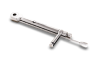
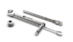

Chave Catraca Torquímetro
:: Disponível em aço cirúrgico;
:: Extremamente segura (variação menor que 5%);
:: Encaixe para conexões quadradas;
:: Catraca desmontável que permite a correta higienização do
conjunto
104.050


Instruções de uso
A Chave Catraca Torquímetro Neodent® foi projetada para permitir a
aplicação do torque necessário e que este seja verificado
momentaneamente com o mesmo instrumento.
Para isto, basta aplicar a força na HASTE DA CATRACA
1
(nunca no corpo da catraca) até alcançar o valor marcado
na GRADUAÇÃO LATERAL
2
que corresponde ao torque desejado
A função como catraca serve para ambos os lados, basta puxar e girar
o pino da chave em 180º. Porém, a função torquímetro é apenas para o
sentido horário.
CUIDADO
: Ao fazer a inversão de sentido do torque, a engrenagem
poderá desprender do corpo da chave e cair. Portanto, esta
inversão só deverá ser feita ou com a chave conectada à
peça ou fora da boca do paciente.
A Chave Catraca Torquímetro Neodent® possui torques précalibrados:
10, 20, 32, 45 e 60 N.cm
Pinça de Titânio
:: Para manipulação de implantes;
:: Novo sistema de pinça que evita o desvio da ponta ativa;
:: Escala em milímetros para conferências durante os
procedimentos;
:: Autotravamento do implante
129.001

Pinça de Titânio
:: Para manipulação de implantes;
:: Novo sistema de pinça que evita o desvio da ponta ativa;
:: Escala em milímetros para conferências durante os
procedimentos;
:: Autotravamento do implante
129.001
Pinça de Titânio
:: Para manipulação de implantes;
:: Novo sistema de pinça que evita o desvio da ponta ativa;
:: Escala em milímetros para conferências durante os
procedimentos;
:: Autotravamento do implante
129.001
Sonda Milimetrada
:: Disponível em titânio;
:: Para sondagem de preparos e análise de profundidade;
:: Escala em milímetros para conferências durante procedimento
129.004
Bandeirinha 7 e 9 mm
:: Disponível em aço cirúrgico;
:: Indicado para planejamento protético/cirúrgico
:: Marcações de 7 e 9 mm
128.026
Afastador Labial Cirúrgico
:: Disponível em aço cirúrgico;
:: Vértices arredondados para minimizar o trauma cirúrgico
124.001
Afastador Columbia
:: Disponível em aço cirúrgico;
:: Vértices arredondados para minimizar o trauma cirúrgico
124.003
Cabo de Bisturi
:: Disponível em aço cirúrgico;
:: Para uso de lâminas de bisturi convencional;
:: Não acompanha lâmina
129.008
Haste de Bivers
:: Disponível em aço cirúrgico;
:: Exodontia atraumática para instalação de implantes;
:: Similar a um periótomo;
:: Não acompanha lâmina
129.002